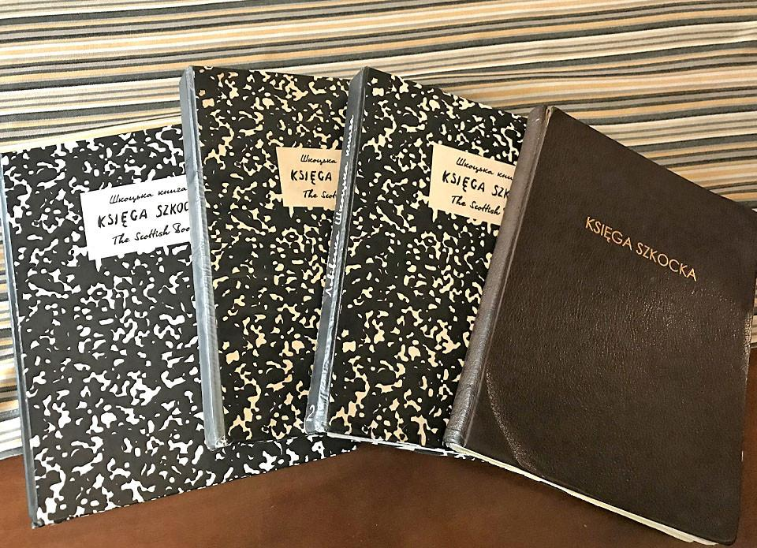

The Scottish Book
An independent mathematical notebook for questions, proofs and counterexamples, developed through human–AI collaboration and open community contributions.
Propose a mathematical problem · Contribute to a problem · Symbolic prizes
“The purpose of life is to prove and to conjecture.” — Paul Erdős (MacTutor)
50 numbered entries: 46 candidates, two requiring reformulation, one requiring specification, and one internally proved result. P010 was submitted to Integers (not accepted or published). Historical prizes · Literature review.

The Scottish Café tradition
Mathematicians associated with the Scottish Café in Lwów, including Stefan Banach, recorded questions, observations and occasional prizes in a shared notebook beginning in 1935.
This independently maintained collection follows that tradition of mathematical problem posing and criticism. It is not an edition of the original notebook or its official continuation. Historical reference.
Problem catalogue
All numbered problems appear in one sequence. Formulation, historical novelty, and symbolic rewards are separate attributes. Rewards do not rank difficulty or importance. Sources and reward conditions.
Loading problem catalogue…
| ID | Question | Area | Formulation | Novelty | Reward |
|---|